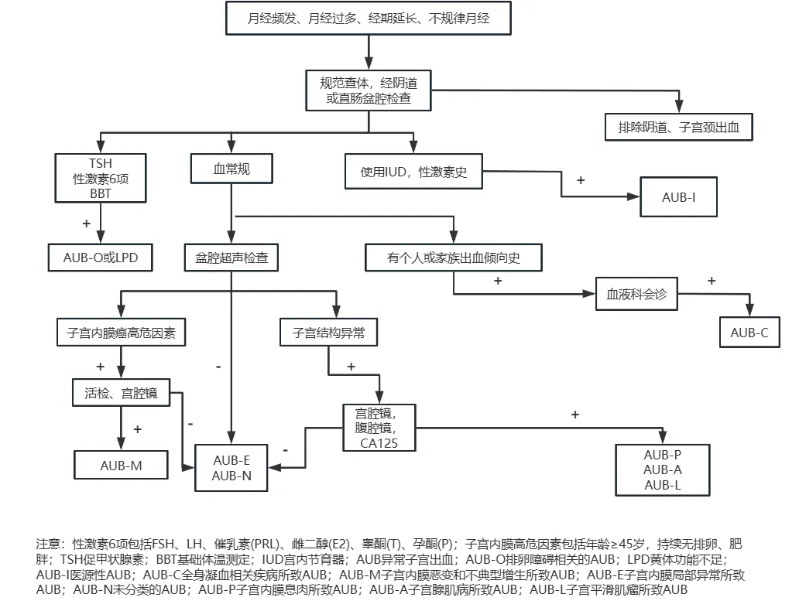

月经出血过多¶
定义¶
月经过多是指女性在月经期间出血量超过正常范围，影响生活质量的一种常见妇科问题。在医学上，通常定义为月经周期中出血量超过80毫升。但是，由于实际测量月经量比较困难，通常根据患者的主观感受和对生活的影响来判断是否为月经过多。1
病因¶
子宫原因¶
-
子宫内膜息肉或宫颈息肉 ：子宫内膜或宫颈上的异常生长物可能导致出血增多
-
子宫内膜异位症（子宫腺肌症） ：子宫内膜组织生长到子宫肌层，导致子宫增大和出血增多
-
子宫肌瘤 ：子宫内的良性肿瘤，可因扩大子宫内膜面积导致月经过多和经期延长
-
子宫内膜癌或子宫内膜增生 ：子宫内膜的癌变或异常增生可能导致不规则出血
-
子宫内膜因素 ：子宫内膜对激素的异常反应可能导致出血问题
凝血功能障碍¶
影响血液正常凝结，导致内膜出血不止
排卵功能障碍¶
多囊卵巢综合征 (PCOS)、甲状腺功能减退、高泌乳素血症、压力、体重变化和年龄因素都可能影响排卵，导致月经不规律和出血过多
医源性因素¶
某些药物，如激素避孕药的使用，可能会引起月经过多
临床表现¶
症状¶
月经量过多¶
经期出血量明显多于平时，需要频繁更换卫生巾或卫生棉条。
经期延长¶
月经持续时间超过7天
夜间出血¶
夜间也需要频繁更换卫生用品
血块¶
月经血中出现大量血块
贫血¶
由于长期出血过多，可能导致贫血，出现疲劳、乏力、头晕等症状
体征¶
子宫增大或触痛¶
可能提示子宫肌瘤或子宫腺肌症
盆腔检查异常¶
可能发现息肉或其他异常生长
面色苍白¶
由贫血导致
诊断¶
病史询问¶
详细了解月经周期、出血量、持续时间以及相关症状
体格检查¶
包括盆腔检查，评估子宫和附件情况
血液检查¶
-
血常规：检查是否存在贫血
-
凝血功能检查：排除凝血功能障碍
-
激素水平检查：评估是否存在排卵功能障碍
影像学检查¶
- 盆腔超声：检查子宫、子宫内膜和卵巢，以发现子宫肌瘤、息肉或子宫腺肌症
子宫内膜活检¶
在必要时进行，以排除子宫内膜癌或增生
治疗¶
药物治疗¶
-
非甾体抗炎药 (NSAIDs)：如布洛芬，可减轻经期疼痛和减少出血量 ，适用于轻度月经过多
-
口服避孕药：通过调节激素水平来减少出血量和规律月经周期，适用于无生育要求的患者
-
孕激素：如口服孕激素或宫内节育器 (曼月乐)，可减少子宫内膜厚度，从而减少出血，适用于子宫内膜增生症或排卵功能障碍引起的月经过多
-
止血药：如氨甲环酸，可促进血液凝结，减少出血量，用于各种原因引起的月经过多
手术治疗¶
-
子宫内膜消融术：通过射频或其他方法破坏子宫内膜，减少出血
-
子宫肌瘤切除术：切除子宫肌瘤，保留子宫
-
子宫切除术：切除整个子宫，适用于药物治疗无效且无生育需求的患者
诊疗流程¶

图1：月经过多诊疗流程图
就医意见¶
如果出现以下情况，建议及时就医：
-
月经量突然增多，持续时间延长
-
出现贫血症状，如疲劳、头晕
-
月经过多严重影响日常生活
-
怀疑有其他潜在疾病
医生会根据您的具体情况制定合适的诊疗方案，以改善生活质量
编写者： 颜妞 上传者： 张梓润